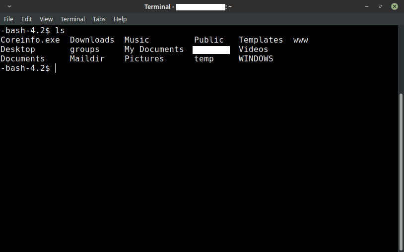

Previous: 02 - Getting Started | Table of Contents | Next: 04 - Hello World
3 - CLI
Introduction
Welcome to the Command Line Interface (CLI)! Before we begin programming we need to understand something about the context and environment that we are working in.
First, we start with a little nomenclature. Perhaps you have seen a black, white or blue window with nothing but text in it on your computer. This is called the command line or the command line interface. It has other names that I may use such as "terminal", "command prompt", or "shell" but I will refer to it as the "command line" or CLI in this lesson.
An example of one is shown below:

This interface was, at one point, the only way to use a computer. Generally speaking, if you wanted to explore files, play a computer game or use any program, this was the way you needed to do it. There were no windowing systems or point-and-click interfaces. The way you did anything was to type commands into the prompt (seen above as the text after the $) and look at the output that resulted. We will be doing something similar in this lesson. To enter any command simply type the command in and press Enter.
Secondly, you should be familiar with basic terminology relating to file systems. Important words you need to know are in bold font (i.e. words like folder, file, program and app or application"). I will use the words directory and folder interchangeably.
All file systems I have seen start with a root folder (usually C:\ for Windows and / for OS X and Linux). File systems start at this root folder and the root folder contains a tree of sub-folders in which all files are organized. You will sometimes see folders referred to as parent folders to their sub-folders and their sub-folders as child folders to the parent folder. This relationship is a common way of understanding relationships between files and folders. The address of a particular file or folder is called its path. The path of a file or folder is a string of text with each folder name separated by \ (for Windows) or / (for OS X or Linux). Examples of paths are:
C:\Users\mer\Documents\a_file.py(Windows)/home/mer/Documents/a_file.py(OS X or Linux).
We will explore this via the command line and cover how to do basic navigation and commands. The command line is a feature-rich and powerful interface so this lesson is by no means comprehensive. It is intended to get you just competent enough to do programming. We will explore more about the command line later.
Open the command line
Depending on your operating system (e.g. Microsoft Windows, Apple Mac OS X, Linux) the way to open your command line differs significantly. Once your command line is open however, almost everything else is the same or very similar. I will indicate the differences where this is the case.
Windows 7/8/10
- From your desktop, press the windows key.
- The start menu should pop up.
- Type in "powershell" into the start menu search bar.
- A bunch of options should be displayed in the start menu.
- Select "Windows PowerShell" from the list of options to open it.
- A blue box with some text and a prompt should appear that looks something like this:
PS C:\Users\YOUR-USERNAME\>
- A blue box with some text and a prompt should appear that looks something like this:
Apple Mac OS X
- Open spotlight search by pressing ⌘+Space.
- A spotlight search bar should appear on your screen.
- Type "terminal" into the search bar.
- Options should appear under the search bar.
- Select the "Terminal" application to open it.
- A white box with some text should appear with a prompt that looks something like:
"YOUR COMPUTER'S NAME":~ "YOUR USERNAME"$
- A white box with some text should appear with a prompt that looks something like:
Linux
- Press
ctrl+torctrl+alt+tfrom your desktop.- A bash window should appear with some text in it and a prompt that looks like:
"YOUR USERNAME"@"YOUR COMPUTER'S NAME" ~ $or-bash-4.2$
- A bash window should appear with some text in it and a prompt that looks like:
Note about your command line prompt
Regardless of what kind of prompt appears on your command line interface, ignore everything on the line before the $ or the >, that is, the prompt symbol. That part before the prompt symbol is usually irrelevant to understanding what is happening anyway. In this lesson and the rest of the book, I have omitted anything before the prompt symbol and you may interpret the $ or the > as being equivalent. Therefore, when you see something like $ clear written in the book, you should read that as, "Type the text clear into the command line prompt and press enter." Just remember, the $ is NOT part of what you type in.
Once you have successfully opened your command line interface, you may begin the rest of the lesson. The object of this lesson is to practice and become familiar with each of the commands listed below. A summary table at the end of the lesson lists all the commands and what they do.
Where am I? (Command: pwd)
Begin by typing the following in your prompt and pressing Enter (Remember, DO NOT type in the $.):
$ pwd
pwd means 'print working directory'. This command will show you where you are
in the directory structure of your computer. For example typing this command
into the terminal on my linux computer print out /home/mer to the terminal window, which tells me
I am in the 'mer' directory of the 'home' directory of the root directory of my
computer. Similarly in Windows, pwd returns C:\Users\YOUR-USERNAME\. Therefore if you ever get lost while navigating in the terminal, use pwd to
figure out where you are.
Moving Around (Command: cd)
Type the following into your terminal and press Enter (Again remember, DO NOT type in the $.):
$ cd ~
cd means 'change directory' and is one of the main ways you will navigate
the command line. The normal usage of the "change directory" command is of the form: $ cd "NAME OF DIRECTORY" (e.g. cd Documents) but in this case we are using the "home" shortcut (~).
The tilde (~) is a shorthand that stands for the 'home' directory. This can take you to slightly different places depending on the operating system you are running, but should be the default starting place for any folders you may wish to navigate. If you
need to get back home or want to navigate from the home folder as a root
folder the ~ will get you there.
So when you enter cd ~ what you are telling the terminal is this:
"Take me me to the home folder." Or "Change the working directory to the home folder".
Working in folders (Commands: ls, mkdir, and touch or New-Item)
Now that you are in the 'home' folder, enter the following:
$ ls
ls is shorthand for "list files and sub-folders in the current directory".
Upon entering this command you should see a list of files and directories in
your home folder.
Let's make a directory in your home folder. Enter the following:
$ mkdir peas
Now enter the ls command and you will notice a new folder in your home folder
called 'peas' you made it with the 'make directory' command.
Let's go in there!
$ cd peas
$ ls
$
If you type in the above commands in you will notice that nothing comes up! There is nothing in this folder yet so lets make a file to put in this folder! This is bit different for Windows so follow the Windows commands if you are using Windows.
- Command for Mac OS X or Linux
$ touch carrots.py
- Command for Windows
> New-Item -type file carrots.py
You have just created an empty file called carrots.py. The .py part of the filename is called the extension and is a way that a user communicates what kind of file is being used. Generally, Python files have the .py extension but they are not fundamentally different from plain text files (i.e. files that end with .txt).
Make another file called cool_beans.txt using the touch command (if you're on Mac OS X or Linux) or New-Item command (if you're on windows). Go on, try it yourself!
Did you do it? Check that you it worked using the ls command.
You should see that you have two files in this folder called carrots.py and cool_beans.txt. If you're curious you can
"print the working directory" and find this folder in your file explorer
program on your computer. Cool huh?
Now that we know how to create files and folders we will now learn how to delete them.
Deleting Files and Folders (Commands: rm, rmdir)
Now that we know how to create files and folders we will now learn how to delete them. Let's delete your files by entering the command:
$ rm carrots.py
rm means "remove". Verify that this has been deleted with ls.
Now let's delete the other file.
$ rm cool_beans.txt
When you finish this your directory should once again be empty. You can verify
this with ls.
Using Relative Paths (e.g. . and ..)
Now...how do we get out of here? You may want to go directly to the home directory using
$ cd ~
$ cd ..
. is shorthand for "the directory I'm in right now" and .. means "the immediate parent folder of where I am right now".
You can verify that you have indeed left the peas directory by using the pwd
and ls commands. Now it is time to actually delete the directory.
$ rmdir peas
If you didn't have any errors doing this congratulations! You have finished the basic exercises for the command line!
Review
Below is a table of all the commands we learned in this lesson and pertinent information about each.
| Command | Usage | Effect |
|---|---|---|
pwd |
$ pwd |
"Print Working Directory": Prints the location of the folder you are currently in. |
cd |
$ cd NAME |
"Change Directory": Changes your location to that of NAME. The tilde ~ refers to the home directory, . refers to the current directory and .. refers to the immediate parent directory. |
ls |
$ ls |
Lists all files and sub-folders in the current directory. |
mkdir |
$ mkdir NAME |
"Make Directory": Makes a directory in the current directory called NAME. |
touch |
$ touch NAME.EXT |
(Mac and Linux) Makes a new file in the current directory with a name of NAME and an extension of .EXT |
New-item |
> New-Item -type file NAME.EXT |
(Windows) Same as touch. |
rm |
$ rm NAME |
"Remove": Permanently deletes the file called NAME where NAME includes both the filename and the extension. |
rmdir |
$ rmdir NAME |
"Remove Directory": Permanently deletes a directory called NAME. (Only works if the directory is empty.) |
| current directory path | cd . |
Takes you nowhere but . is the shorthand for "the directory I am currently in". |
| immediate parent directory path | cd .. |
Takes you to the immediate parent directory. For, example if you were in /home/mer/cheese/pizza/ and you entered cd .. you would be taken to /home/mer/cheese/. Remember that .. is shorthand for "the immediate parent directory". |
Memorize these commands or keep this cheat sheet with you to help you work in the command line. Once you feel comfortable with these commands then it's time to start programming!
Hone your skills
Here are a few questions you should research:
- Normally you have to remove every file in a directory before you can delete the directory. What is a way you can delete a directory and all its contents using one line of command line code? Why would you not want to do this?
- How could you navigate to the parent directory's parent's parent directory in one command?
- Look up commands to 'copy', 'rename' and 'move' files in command line. How would you complete these common tasks in command line?
- Research other common commands in command line and learn them for your benefit. Use google or a similar search engine. There are many good tutorials to use many powerful commands in the command line.
Previous: 02 - Getting Started | Table of Contents | Next: 04 - Hello World